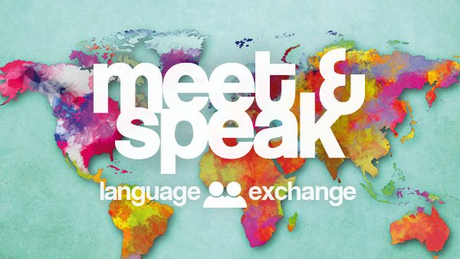

Language Communities in Korea

Korean language exchanges are an amazing tool for anyone interested in learning the Korean language or learning about Korea – they allow you to practice what you’ve learned in a friendly, casual,
and educational environment that adds a fun new element to the learning process. Here are some websites and communities for you to recommend.
1. My Language Exchange
Website :
http://www.mylanguageexchange.com
MyLanguageExchange is great at what they do – rather than typical forums where individual users post threads and wait for responses from a bunch of different individuals, MyLanguageExchange makes the language exchange experience personal.
On this site, each user has a profile complete with details like a profile picture, spoken languages, languages they would like to learn, location, and a general description. These details ensure that users are able to find unique pen pals that match each other’s language learning style, fostering ongoing, educational friendships rather than one-off responses in a forum.
Check out MyLanguageExchange if you think you would benefit from keeping in touch with a Korean speaker while embarking on your journey to learn Korean – you won’t regret it!
2. Craigslist
Website:
www.craigslist.com
While Craigslist may not be the first site that comes to mind when thinking “language exchange,” it’s actually an incredible practical forum if you’re seeking something a bit more advanced than the typical pen pal.
Need something professionally translated to Korean? Look no further than the Seoul Craigslist, which hosts thousands of tutors, teachers, and interpreters that are willing to help out students in the process of learning Korean, either informally as a pen pal or professionally as a contractor.
There are also plenty of other workshops and exchange groups hosted on the Seoul site. For example, there is currently a live posting inviting individuals living in Korea to join a spring photography workshop, where you can presumably practice your Korean AND cultivate your photography skills! Don’t let the barebones aesthetic scare you off – you’d be surprised at what you can find on Craigslist.
3. MeetUp’s Language Exchange Café
Website :
www.meetup.com
Remember the days when we were told that we should never, ever meet people on the internet because they might be waiting for us with a chainsaw? Thankfully, those days are long behind us, and when we dropped the paranoia we gained innumerable opportunities to learn from the knowledge of internet strangers.
MeetUp’s Language Exchange Café is a glowing example of the good that can come from like-minded internet strangers coming together. The group hosts meetings each day of the week in cities across Korea and each meeting is meant to be a fun, safe environment for speakers of Korean, Chinese, and Japanese to learn and practice a new language. Nothing beats learning a new language with the help of people that are as committed to broadening their horizons as you are. Be sure to check out the next meetup near you and tell us about it in the comments below!
4. Facebook’s Korean Language Exchange
Website :
www.facebook.com/KorLangEx
The best part about Facebook’s massive list of Korean language exchange pages is that you don’t have to do any additional work to take advantage of the millions of Korean speakers on the internet that are looking to practice and improve.
You don’t have to join a new site or create a separate account to find a Korean pen pal. This particular language exchange is everyday Facebook users that are posting in search of Kakao friends or Skype friends to help them practice Korean or English, depending on their native language. There is almost no effort required – just click the link and press “like” and you’ll begin seeing the language exchange posts showing up in your newsfeed. Low maintenance, much?